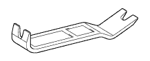
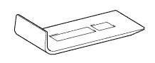

FUEL LID OPENER SWITCH > INSPECTION > Preparation

| Torque wrench | - |
| Protective tape | - |
| Double-sided tape | - |
| Protective goggle | - |
| Metal saw | - |
| Cutter or other similar tool | - |
| Heat light | - |
| MP grease | - |
 | 09010-3C120 | Set, "TORX" Socket Wrench | - |
 | (09013-1C110) | "TORX" Socket Wrench T-type T25 | - |
| (09013-1C120) | "TORX" Socket Wrench T-type T30 | - |
| (09013-1C130) | "TORX" Socket Wrench T-type T40 | - |
 | 09061-1C100 | Clip Remover 6mm | - |
| 09061-1C110 | Clip Remover 10mm | - |
 | 09061-1C300 | Set, Moulding Remover | - |
 | (09061-1C310) | Remover A, Moulding | - |
|  | (09061-1C320) | Remover B, Moulding | - |
|  | (09061-1C340) | Remover D, Moulding | - |
 | 09082-00050 | TOYOTA Electrical Tester Set | - |
 | (09083-00150) | Test Lead Set | - |
| Toyota Genuine Adhesive 1324, Three Bond 1324 or equivalent | - |